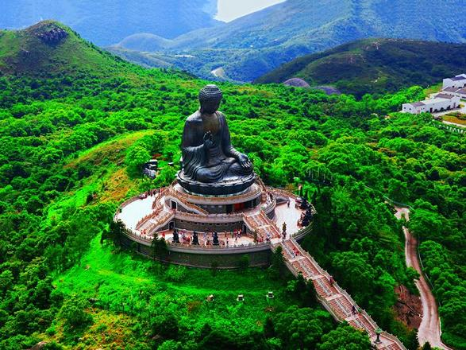
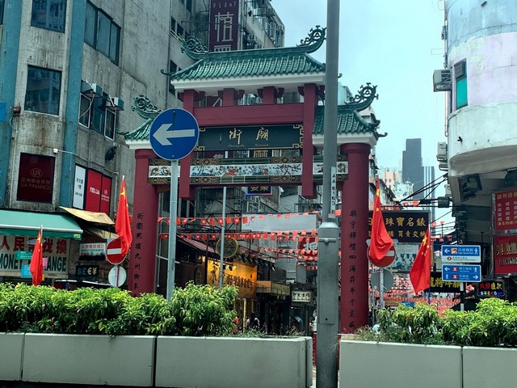

هونج كونج هي مدينة جميلة يرنو كثيرون لزيارتها لما تزخر به من بيئة ثقافية رائعة ومعالم سياحية متنوّعة تشمل الحدائق الرائعة والأماكن الترفيهية المتنوّعة وكذلك المسارح والشواطئ الخلابة جنباً إلى جنب مع الأسواق التقليدية المميزة.
أفضل وقت لزيارة البلد
الخريف (سبتمبر إلى نوفمبر)
أبرز الأماكن السياحية
ديزني لاند هونغ كونغ Hong Kong Disneyland ديزني لاند: هو واحد من أجمل منتزهات ديزني حول العالم وأكثرها تميز
يعتبر المنتزه من اهم الاماكن السياحية في هونغ كونغ الصين حيث يستقبل ما يزيد عن 34 ألف زائر بشكل يومي وهو معدل عالي للغاية بالنسبة لحدائق ومنتزهات ديزني حول العالم
جزيرة لانتاو Lantau Island جزيرة الانتو: هي أكبر جزر هونج كونج على الإطلاق وتقع عند مصب نهر اللؤلؤ، تعتبر من اجمل اماكن السياحة في هونج كونج الصين حيث تحيط المياه الزرقاء الساحرة بالجزيرة من جميع الجوانب بالإضافة إلى شواطئها الذهبية الخلابة التي توفر العديد من الأنشطة التي سوف تستمتع بممارستها عند زيارتك إلى الجزيرة

تمبل ستريت نايت: تتطلّب منك زيارة هونج كونج وقت مناسب لتكُن قادراً على تفقّد كافة متاجره، فقد بات هذا السوق وجهة مثالية لمن يفتّش عن مناطق سياحية في هونج كونج تمنحه تجربة تسوّق رائعة.
إذ أنه سوق شهير متنوع يتضمّن بين أروقته عدد متنوّع من المتاجر، بما في ذلك، محلات الملبوسات، وكذلك متاجر المشغولات اليدوية وأيضاً متاجر بيع المستلزمات المنزلية

كيفية الوصول إليها
يمكن الوصول إلى البلد بواسطة الطائرة، السفينة، القطار، أو السيارة اعتمادًا على موقعك الحالي.